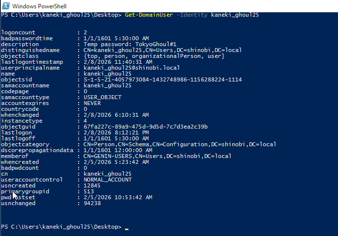
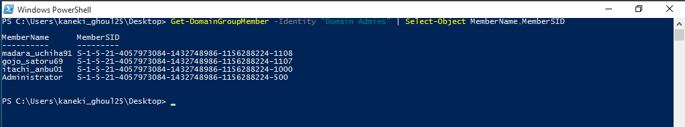
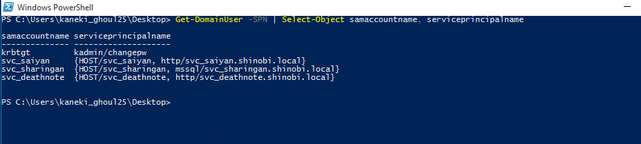
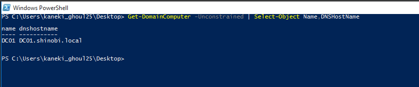
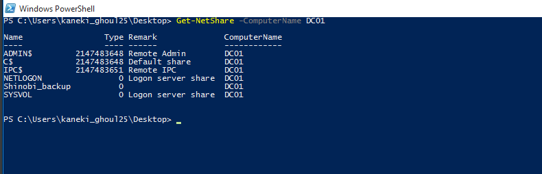
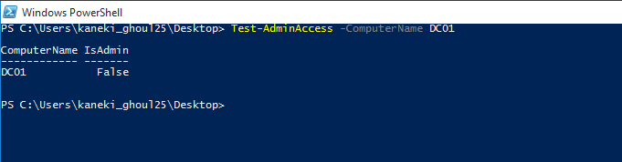
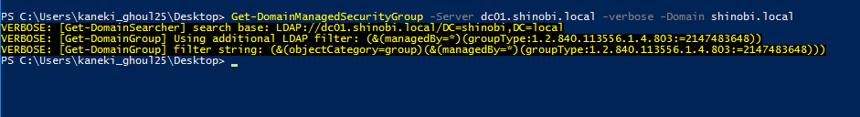

Post-Exploitation Enumeration (
PowerView
)
Maps the environment's boundaries and identifies key infrastructure.
| Command | Description | Attack Vector / Usage |
|---|---|---|
| Get-Domain | Retrieves current domain info (Policy, Controllers) . | Basic Recon. |
| Get-DomainSID | Returns the domain's Security Identifier (SID) . | Golden Ticket Attacks (Requires KRBTGT hash) . |
| Get-Forest | Maps the forest topology, root domain, and schema . | Identifying forest-wide targets. |
| Get-DomainDNSZone | Enumerates DNS zones to find internal subdomains . | Internal network mapping. |
| Get-DomainTrust | Lists direct trust relationships . | Identifying pivot paths to other domains . |
| Get-DomainTrustMapping | Recursive trust mapping to build a full graph . | Complex multi-hop attacks across forests. |
Identifies high-value targets and weak configurations.
| Command | Description | Attack Vector / Usage |
|---|---|---|
| Get-DomainUser -SPN | Lists users with Service Principal Names . | Kerberoasting (Offline crackable tickets). |
| Get-DomainUser -KerberosPreauthNotRequired | Users with pre-auth disabled . | AS-REP Roasting (Offline crackable sessions). |
| Get-DomainUser -UACFilter PASSWD_NOTREQD | Lists accounts that do not require a password . | Empty Password Login. |
| Get-DomainUser -LDAPFilter '(sidHistory=*)' | Finds migrated users with SID History . | SID History Abuse (Privilege Escalation). |
| Get-DomainManagedSecurityGroup | Finds groups managed by specific users . | ACL Abuse (Write permissions on groups). |
| Get-DomainGroupMember -Identity "Help Desk" | Lists members of specific high-value groups . | Targeted Phishing / Credential Theft. |
Locates where data lives and where admins log in.
| Command | Description | Attack Vector / Usage |
|---|---|---|
| Get-DomainFileServer | Identifies servers likely hosting sensitive shares . | Data Exfiltration (Home dirs, scripts). |
| Get-DomainComputer -TrustedToAuth | Finds computers with Constrained Delegation . | Delegation Abuse (Impersonate users to services). |
| Get-DomainComputer -Unconstrained | Finds computers with Unconstrained Delegation . | Unconstrained Delegation (Capture TGTs). |
| Get-NetShare | Lists SMB shares on local or remote hosts . | finding C$, ADMIN$, or sensitive backups. |
Focuses on moving from one compromised machine to another.
| Command | Description | Attack Vector / Usage |
|---|---|---|
| Test-AdminAccess | Checks if your current user has Local Admin on targets . | Lateral Movement (PsExec / WMI). |
| Get-NetLocalGroup -ComputerName <Target> | Lists local groups (e.g., Administrators) on a remote PC . | Recon for local privilege escalation. |
| Get-NetRDPSession | Lists active RDP sessions on remote machines . | Session Hijacking / Timing attacks . |
-----------------------------------------------------------------------------------------------------------------------------------------------------------------------------------------------------------------------------------------------------------------
Scenario: Following the successful compromise of the user kaneki_ghoul25 (Credentials found in AD Description: TokyoGhoul#1), we initiated post-exploitation reconnaissance to verify our access level and identifying the user's group memberships.
Get-DomainUser -Identity kaneki_ghoul25kaneki_ghoul25. The user is a member of the "GENIN-USERS" group and has a valid SID. This access allows us to query the Domain Controller for information about other objects.
Objective: Identify the "Keys to the Kingdom"—the specific accounts that hold Domain Admin privileges. These are our primary targets for Credential Dumping.
Get-DomainGroupMember -Identity "Domain Admins"Administrator (Built-in)madara_uchiha91gojo_satoru69itachi_anbu01
Objective: Identify Service Accounts with registered Service Principal Names (SPNs). These accounts are vulnerable to Kerberoasting, allowing us to request their TGS tickets and crack them offline.
Get-DomainUser -SPN | Select-Object samaccountname,serviceprincipalnamesvc_saiyansvc_sharingan (Running MSSQL)svc_deathnote
Objective: Find computers configured with Unconstrained Delegation. If a Domain Admin connects to such a machine, their TGT is stored in memory, allowing us to steal it and impersonate them (Unconstrained Delegation Attack).
Get-DomainComputer -UnconstrainedDC01 is configured with Unconstrained Delegation. While standard for DCs, this confirms that compromising DC01 yields total domain dominance.
Objective: Scan the network for non-standard file shares that might contain sensitive data (backups, config files) accessible to our low-level user.
Get-NetShare -ComputerName DC01ADMIN$, C$, SYSVOL.Shinobi_backup. This is a high-priority target for data exfiltration.
Objective: Determine if kaneki_ghoul25 has Local Administrator rights on the Domain Controller to execute attacks like PsExec or WMI.
Test-AdminAccess -ComputerName DC01IsAdmin: False. The current user does not have administrative rights on the DC. We must rely on privilege escalation (like Kerberoasting) rather than direct lateral movement.
Objective: Check if kaneki_ghoul25 is the "Manager" of any security groups, which would allow us to modify group membership (Add Self) to escalate privileges.
Get-DomainManagedSecurityGroup
{kind=link}
{kind=link}
{kind=link}
{kind=link}
{kind=link}
{kind=link}
{kind=link}